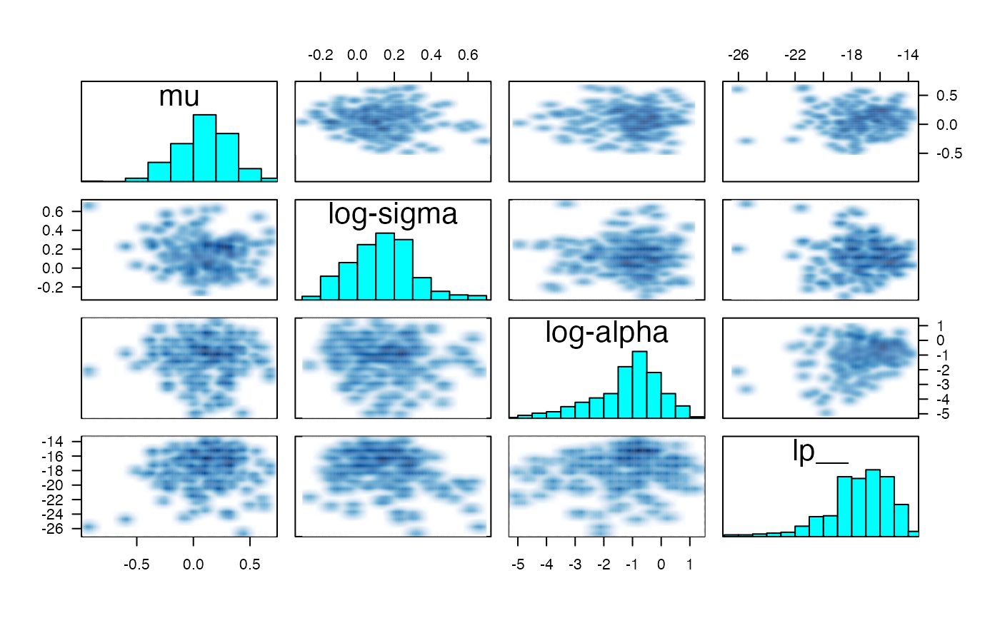

stanfit objectstanfit-method-pairs.RdA pairs method that is customized for MCMC output
# S3 method for stanfit
pairs(x, labels = NULL, panel = NULL, ...,
lower.panel = NULL,
upper.panel = NULL, diag.panel = NULL, text.panel = NULL,
label.pos = 0.5 + 1/3, cex.labels = NULL, font.labels = 1,
row1attop = TRUE, gap = 1, log = "", pars = NULL, include = TRUE,
condition = "accept_stat__")An object of S4 class stanfit
Same as in
pairs syntactically but see the Details section for different
default arguments
Same as in pairs.default
Same as in pairs.default, which makes it possible to
utilize logarithmic axes and additionally accepts log = TRUE. See the
Details section.
If not NULL, a character vector indicating which quantities
to include in the plots, which is passed to extract. Thus,
by default, all unknown quantities are included, which may be far too many
to visualize on a small computer screen. If include = FALSE, then
the named parameters are excluded from the plot.
If NULL, it will plot roughly half of the
chains in the lower panel and the rest in the upper panel. An
integer vector can be passed to select some subset of the chains, of which
roughly half will be plotted in the lower panel and the rest in the upper
panel. A list of two integer vectors can be passed, each specifying a subset
of the chains to be plotted in the lower and upper panels respectively.
A single number between zero and one exclusive can be passed, which is interpreted as the proportion of realizations (among all chains) to plot in the lower panel starting with the first realization in each chain, with the complement (from the end of each chain) plotted in the upper panel.
A (possibly abbreviated) character vector of length one can be passed among
"accept_stat__", "stepsize__", "treedepth__", "n_leapfrog__",
"divergent__",, "energy__", or "lp__", which are the
variables produced by get_sampler_params and
get_logposterior. In that case the lower panel will plot
realizations that are below the median of the indicated variable (or are zero
in the case of "divergent__") and the upper panel will plot realizations
that are greater than or equal to the median of the indicated variable (or are
one in the case of "divergent__").
Finally, any logical vector whose length is equal to the product of the number
of iterations and the number of chains can be passed, in which case realizations
corresponding to FALSE and TRUE will be plotted in the lower
and upper panel respectively. The default is "accept_stat__".
Logical scalar indicating whether to include (the default) or
exclude the parameters named in the pars argument from the plot.
This method differs from the default pairs method in the following
ways. If unspecified, the smoothScatter function is used for the
off-diagonal plots, rather than points, since the former is more
appropriate for visualizing thousands of draws from a posterior distribution.
Also, if unspecified, histograms of the marginal distribution of each quantity
are placed on the diagonal of the plot, after pooling all of the chains specified
by the chain\_id argument.
The draws from the warmup phase are always discarded before plotting.
By default, the lower (upper) triangle of the plot contains draws with below
(above) median acceptance probability. Also, if condition is not
"divergent__", red points will be superimposed onto the smoothed
density plots indicating which (if any) iterations encountered a divergent
transition. Otherwise, yellow points indicate a transition that hit the
maximum treedepth rather than terminated its evolution normally.
You may very well want to specify the log argument for non-negative
parameters. However, the pairs function will drop (with a message)
parameters that are either constant or duplicative with previous parameters.
For example, if a correlation matrix is included among pars, then
neither its diagonal elements (which are always 1) nor its upper triangular
elements (which are the same as the corresponding lower triangular elements)
will be included. Thus, if log is an integer vector, it needs to
pertain to the parameters after constant and duplicative ones are dropped.
It is perhaps easiest to specify log = TRUE, which will utilize
logarithmic axes for all non-negative parameters, except lp__ and
any integer valued quantities.
S4 class stanfit and its method extract as
well as the pairs generic function. Also, see
get_sampler_params and get_logposterior.
example(read_stan_csv)
#>
#> rd_st_> csvfiles <- dir(system.file('misc', package = 'rstan'),
#> rd_st_+ pattern = 'rstan_doc_ex_[0-9].csv', full.names = TRUE)
#>
#> rd_st_> fit <- read_stan_csv(csvfiles)
pairs(fit, pars = c("mu", "sigma", "alpha", "lp__"), log = TRUE, las = 1)
#> Warning: argument 1 does not name a graphical parameter
#> Warning: argument 1 does not name a graphical parameter
#> Warning: argument 1 does not name a graphical parameter
#> Warning: argument 1 does not name a graphical parameter

# sigma and alpha will have logarithmic axes